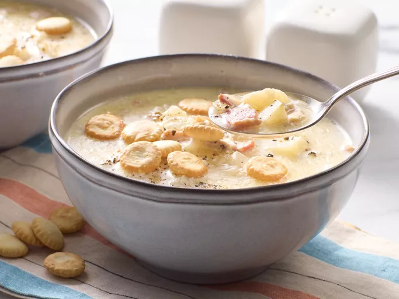

This creamy New England clam chowder with potatoes
and bacon is a hearty and oh-so-comforting soup
that's actually quite easy to make. It's so delicious,
savory, and comforting on a cold winter day!
How to Make New England Clam Chowder
You'll find a detailed ingredient list and
step-by-step instructions in the recipe below,
but let's go over the basics:
Ingredients
- 4 slices bacon, diced
- 1 1/2 cups chopped onion
- 4 cups peeled and cubed potatoes
- 1 1/2 cups water
- 1 1/2 teaspoons salt
- 1/2 teaspoons ground black pepper to taste
- 3 cups half-and-half
- 3 tablespoons butter
- 2 (10 ounce) cans minced clams
Steps
- Gather all ingredients.
-
Place diced bacon in a large stockpot
over medium-high heat; cook and stir
until almost crisp. Add onion; cook
and stir until tender, about 5 minutes.
-
Stir in potatoes and add water; season with
salt and pepper and bring to a boil. Reduce
heat to low and simmer, uncovered, until
potatoes are tender, about 15 minutes
-
Pour in half-and-half and add butter.
-
Drain clams, reserving clam liquid; stir clams
and 1/2 of the clam liquid into the soup. Cook
until heated through, without boiling, about 5 minutes.
- Serve and enjoy!